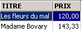
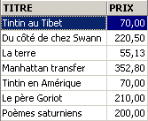
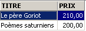
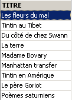
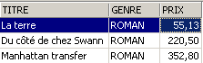
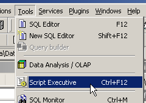

4. Les expressions du langage SQL
4.1. Introduction
Dans la plupart des commandes SQL, il est possible d'utiliser une expression. Prenons par exemple la commande SELECT :
SELECT expr1, expr2, ... from table WHERE expression |
SELECT sélectionne les lignes pour lesquelles expression est vraie et affiche pour chacune d'elles les valeurs de expri.
Exemples
Nous nous proposons dans ce paragraphe d'expliciter la notion d'expression. Une expression élémentaire est du type :
opérande1 opérateur opérande2
ou
fonction(paramètres)
Exemple
Dans l'expression GENRE = 'ROMAN'
- GENRE est l'opérande1
- 'ROMAN' est l'opérande2
- = est l'opérateur
Dans l'expression upper(genre)
- upper est une fonction
- genre est un paramètre de cette fonction.
Nous traitons tout d'abord des expressions avec opérateurs, puis nous présenterons les fonctions disponibles sous Firebird.
4.2. Expressions avec opérateur
Nous classifierons les expressions avec opérateur suivant le type de leurs opérandes :
- numérique
- chaîne de caractères
- date
- booléen ou logique
4.2.1. Les expressions à opérandes de type numérique
4.2.1.1. Liste des opérateurs
Soient nombre1, nombre2, nombre3 des nombres. Les opérateurs utilisables sont les suivants :
Opérateurs relationnels
: nombre1 plus grand que nombre2 | |
: nombre1 plus grand ou égal à nombre2 | |
: nombre1 plus petit que nombre2 | |
: nombre1 plus petit ou égal à nombre2 | |
: nombre1 égal à nombre2 | |
: nombre1 différent de nombre2 | |
: idem | |
: nombre1 dans l'intervalle [nombre2,nombre3] | |
: nombre1 appartient à liste de nombres | |
: nombre1 n'a pas de valeur | |
: nombre1 a une valeur |
Opérateurs arithmétiques
: addition | |
: soustraction | |
: multiplication | |
: division |
4.2.1.2. Opérateurs relationnels
Une expression relationnelle exprime une relation qui est vraie ou fausse. Le résultat d'une telle expression est donc un booléen ou valeur logique.
Exemples :



4.2.1.3. Opérateurs arithmétiques
L'expression arithmétique nous est familière. Elle exprime un calcul à faire entre des données numériques. Nous avons déjà rencontré de telles expressions : on suppose que le prix mémorisé dans les fiches du fichier BIBLIO soit un prix hors taxes. On veut visualiser chaque titre avec son prix TTC pour un taux de TVA de 18.6% :
Si les prix doivent augmenter de 3%, la commande sera
On peut trouver plusieurs opérateurs arithmétiques dans une expression avec de plus des fonctions et des parenthèses. Ces éléments sont traités selon des priorités différentes :
1 | <---- plus prioritaire | |
2 | ||
3 | ||
4 | <---- moins prioritaire |
Lorsque deux opérateurs de même priorité sont présents dans l'expression, c'est celui qui est le plus à gauche dans l'expression qui est évalué tout d'abord.
Exemples
L'expression PRIX*TAUX+TAXES sera évaluée comme (PRIX*TAUX)+TAXES. C'est en effet l'opérateur de multiplication qui sera utilisé en premier. L'expresssion PRIX*TAUX/100 sera évaluée comme (PRIX*TAUX)/100.
4.2.2. Les expressions à opérandes de type caractères
4.2.2.1. Liste des opérateurs
Les opérateurs utilisables sont les suivants :
Soient chaine1, chaine2, chaine3, modèle des chaînes de caractères
: chaine1 plus grande que chaine2 | |
: chaine1 plus grande ou égale à chaine2 | |
: chaine1 plus petite que chaine2 | |
: chaine1 plus petite ou égale à chaine2 | |
: chaine1 égale à chaine2 | |
: chaine1 différente de chaine2 | |
: idem | |
: chaine1 dans l'intervalle [chaine2,chaine3] | |
: chaine1 appartient à liste de chaines | |
: chaine1 n'a pas de valeur | |
: chaine1 a une valeur | |
: chaine1 correspond à modèle |
Opérateur de concaténation
chaine1 || chaine2 : chaine2 concaténée à chaine1
4.2.2.2. Opérateurs relationnels
Que signifie comparer des chaînes avec des opérateurs tels que <, <=, etc ... ?
Tout caractère est codé par un nombre entier. Lorsqu'on compare deux caractères, ce sont leurs codes entiers qui sont comparés. Le codage adopté respecte l'ordre naturel du dictionnaire :
Les chiffres viennent avant les lettres, et les majuscules avant les minuscules.
4.2.2.3. Comparaison de deux chaînes
Soit la relation 'CHAT' < 'CHIEN'. Est-elle vraie ou fausse ? Pour effectuer cette comparaison, le SGBD compare les deux chaînes caractère par caractère sur la base de leurs codes entiers. Dès que deux caractères sont trouvés différents, la chaîne à qui appartient le plus petit des deux est dite plus petite que l'autre chaîne. Dans notre exemple 'CHAT' est comparée à 'CHIEN'. On a les résultats successifs suivants :
Après cette dernière comparaison, la chaîne 'CHAT' est déclarée plus petite que la chaîne 'CHIEN'. La relation 'CHAT' < 'CHIEN' est donc vraie.
Soit à comparer maintenant 'CHAT' et 'chat'.
Après cette comparaison, la relation 'CHAT' < 'chat' est déclarée vraie.
Exemples


4.2.2.4. L'opérateur LIKE
L'opérateur LIKE s'utilise comme suit : chaîne LIKE modèle
La relation est vraie si chaîne correspond au modèle. Celui-ci est une chaîne de caractères pouvant comporter deux caractères génériques :
qui désigne toute suite de caractères | |
qui désigne 1 caractère quelconque |
Exemples


4.2.2.5. L'opérateur de concaténation

4.2.3. Les expressions à opérandes de type date
Soient date1, date2, date3 des dates. Les opérateurs utilisables sont les suivants :
Opérateurs relationnels
est vraie si date1 est antérieure à date2 | |
est vraie si date1 est antérieure ou égale à date2 | |
est vraie si date1 est postérieure à date2 | |
est vraie si date1 est postérieure ou égale à date2 | |
est vraie si date1 et date2 sont identiques | |
est vraie si date1 et date2 sont différentes. | |
idem | |
est vraie si date1 est situé entre date2 et date3 | |
est vraie si date1 se trouve dans la liste de dates | |
est vraie si date1 n'a pas de valeur | |
est vraie si date1 a une valeur | |
est vraie si date1 correspond au modèle | |
Opérateurs arithmétiques
: nombre de jours séparant date1 de date2 | |
: date2 telle que date1-date2=nombre | |
: date2 telle que date2-date1=nombre |
Exemples


Age des livres de la bibliothèque ?

4.2.4. Expressions à opérandes booléens
Rappelons qu'un booléen ou valeur logique a deux valeurs possibles : vrai ou faux. L'opérande logique est souvent le résultat d'une expression relationnelle.
Soient booléen1 et booléen2 deux booléens. Il y a trois opérateurs possibles qui sont par ordre de priorité :
| est vraie si booléen1 et booléen2 sont vrais tous les deux. |
| est vraie si booléen1 ou booléen2 est vrai. |
| a pour valeur l'inverse de la valeur de booléen1. |
Exemples

On recherche les livres entre deux prix :

Recherche inverse :

Attention à la priorité des opérateurs !
SQL> select titre,genre,prix from biblio
where genre='ROMAN' and prix>200 or prix<100
order by prix asc

On met des parenthèses pour contrôler la priorité des opérateurs :
SQL> select titre,genre,prix from biblio
where genre='ROMAN' and (prix>200 or prix<100)
order by prix asc

4.3. Les fonctions prédéfinies de Firebird
Firebird dispose de fonctions prédéfinies. Elles ne sont pas immédiatement utilisables dans les ordres SQL. Il faut tout d'abord exécuter le script SQL <firebird>\UDF\ib_udf.sql où <firebird> désigne le répertoire d'installation du SGBD Firebird :

Avec IBExpert, nous procédons de la façon suivante :
- nous utilisons l'outil [Script Excecutive] obtenu par l'option [Tools/ Script Executive] :

- une fois l'outil présent, nous chargeons le script <firebird>\UDF\ib_udf.sql :

- puis nous exécutons le script :

Ceci fait, les fonctions prédéfinies de Firebird sont disponibles pour la base à laquelle on était connectée lorsque le script a été exécuté. Pour le voir, il suffit d'aller dans l'explorateur de bases, et de cliquer sur le noeud [UDF] de la base dans laquelle ont été importées les fonctions :

On a ci-dessus, les fonctions disponibles à la base. Pour les tester, il est pratique d'avoir une table à une ligne. Appelons-la TEST :

et définissons-la comme suit (clic droit sur Tables / New Table ) :
Mettons une unique ligne dans cette table :


Passons maintenant dans l'éditeur SQL (F12) et émettons l'ordre SQL suivant :
qui utilise la fonction prédéfinie cos (cosinus). La commande ci-dessus évalue cos(0) pour chaque ligne de la table TEST, donc en fait pour une seule ligne. Il y a donc simplement affichage de la valeur de cos(0) :

Les fonctions UDF (User Defined Fonction) sont des fonctions que l'utilisateur peut créer et on peut ainsi trouver des bibliothèques de fonctions UDF sur le web. Nous ne décrivons ici que certaines de celles disponibles avec la version téléchargeable de Firebird (2005). Nous les classifions selon le type prédominant de leurs paramètres ou selon leur rôle :
- fonctions à paramètres de type numérique
- fonctions à paramètres de type chaîne de caractères
4.3.1. Fonctions à paramètres de type numérique
| valeur absolue de nombre abs(-15)=15 |
| plus petit entier plus grand ou égal à nombre ceil(15.7)=16 |
| plus grand entier inférieur ou égal à nombre floor(14.3)=14 |
| quotient de la division entière (le quotient est entier) de nombre1 par nombre2 div(7,3)=2 |
| reste de la division entière (le quotient est entier) de nombre1 par nombre2 mod(7,3)=1 |
| -1 si nombre<0 0 si nombre=0 +1 si nombre>0 sign(-6)=-1 |
| racine carrée de nombre si nombre>=0 -1 si nombre<0 sqrt(16)=4 |
4.3.2. Fonctions à paramètres de type chaîne de caractères
ascii_char(nombre) | caractère de code ASCII nombre ascii_char(65)='A' |
lower(chaine) | met chaine en minuscules lower('INFO')='info' |
ltrim(chaine) | Left Trim - Les espaces précédant le texte de chaine sont supprimés : ltrim(' chaton')='chaton' |
replace(chaine1,chaine2,chaine3) | remplace chaine2 par chaine3 dans chaine1. replace('chat et chien','ch','**')='**at et **ien' |
rtrim(chaine1,chaine2) | Right Trim - idem ltrim mais à droite rtrim('chat ')='chat' |
substr(chaine,p,q) | sous-chaîne de chaine commençant en position p et se terminant en position q. substr('chaton',3,5)='ato' |
ascii_val(caractère) | code ASCII de caractère ascii_val('A')=65 |
strlen(chaine) | nombre de caractères de chaine strlen('chaton')=6 |